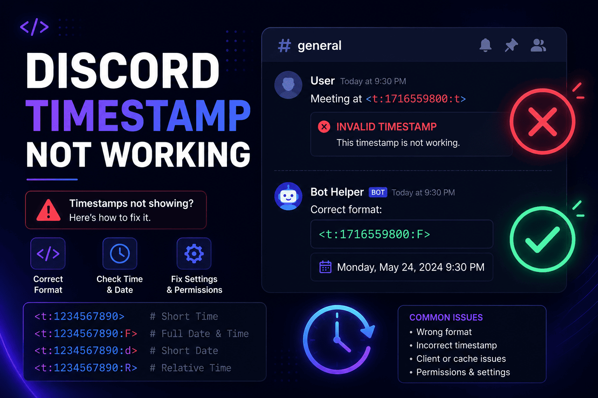

How to Fix Discord Timestamp Not Working? Common Errors and Solutions

You post a clean event time, hit send, and instead of a tidy date you get a chunk of raw code or, worse, a time that is flat out wrong. If your Discord timestamp not working has you scratching your head, you are in good company. It is one of those small problems that feels bigger than it is, mostly because it happens right when you are trying to look organized in front of your server.
Here is the good news. Broken timestamps almost never mean something is wrong with Discord. Nine times out of ten it is a tiny slip in the code or the number behind it, and each slip has a quick fix. Once you know what to look for, you will spot the cause in seconds.
When they work, Discord timestamps are one of the handiest features in the app. They show the right local time to every member, they can count down to an event on their own, and they save you from posting a wall of "8 PM EST / 5 PM PST / 1 AM GMT." That is exactly why a broken one stings. You lose all of that in a single unreadable line.
In this guide we will walk through why timestamps stop working, the most common errors you will run into, and the exact steps to fix each one. By the end you will know how to repair a bad timestamp and how to make sure the next one lands right the first time.
TL;DR
- Most problems come from bad syntax or the wrong Unix number, not from Discord itself.
- Code showing as plain text usually means a missing bracket or backticks around it.
- Wrong time or date usually means a timezone slip or milliseconds used instead of seconds.
- A timestamp looking "wrong" to others is often correct. It shows each person their local time.
- The fastest way to avoid all of this is a Discord timestamp generator that builds the code for you.
Why Discord Timestamps Stop Working
To fix these fast, it helps to know what is happening under the hood. Every Discord timestamp is built on a Unix timestamp, which is just a plain count of seconds since January 1, 1970. That number pins down one exact moment with no timezone attached to it.
Discord wraps that number in a small piece of formatting, like <t:1234567890:F>. The
brackets, the letter t, the colons, and the style letter all have to be exactly right, because
Discord reads the whole thing as one command. Miss a single character and it does not know what you meant, so
it shows the raw text instead.
The other moving part is timezone conversion. Discord takes that one Unix number and paints it in each reader's local time using their device clock. That is a feature, but it also means a wrong device setting or a number built in the wrong zone can throw the result off. Most user errors come down to one of these three things: a typo in the code, a bad number, or a timezone mix-up.
Common Discord Timestamp Problems and Fixes
Discord Timestamp Showing the Wrong Time
This is the classic one. The code renders fine, but the time is off by a few hours. The usual culprit is a timezone slip when the Unix number was created. If you built the number as though your local time were UTC, every viewer sees it shifted by your offset.
Run through this quick check:
- Confirm you built the timestamp from your own local time, then let the conversion to UTC happen for you.
- Check your device date, time, and timezone settings, since Discord follows the device clock.
- If daylight saving recently changed, rebuild the number so it reflects the new offset.
When I switched a community from a spreadsheet of manual times to generated ones, this single error dropped to zero. Almost every "wrong time" complaint we ever had traced back to someone doing the UTC math in their head at midnight.
Discord Timestamp Code Not Displaying Correctly
Here the timestamp shows up as plain text, something like <t:1234567890> sitting right
there in the message instead of a nice date. Discord only converts the code when the syntax is perfect, so a
small break leaves it as text.
A correct code looks like this:
<t:1234567890>And with a style letter it looks like this:
<t:1234567890:R>When it renders as text, check for these:
- Missing characters. A dropped opening
<or closing>breaks the whole thing. - Incorrect syntax. It must be
<t:NUMBER>or<t:NUMBER:STYLE>, with a lowercasetand a colon before the number. - Copying errors. Pasting into a code block, or wrapping the code in backticks, tells Discord to show it literally. Remove the backticks.
Discord Timestamp Showing the Wrong Date
If the date is way off, often years into the future, the number itself is the problem. The most common cause is using milliseconds instead of seconds. Discord expects seconds, which is usually a 10-digit number. Many code tools and JavaScript hand you a 13-digit millisecond value.
The fix is simple. Count the digits. If you see 13, trim the last three and try again. A value like
1234567890000 becomes 1234567890. You can also land on the wrong date if the Unix
number was converted incorrectly in the first place, so it is always worth double checking the number points
to the moment you actually meant.
Discord Timestamp Works for Me But Not Others
This one confuses a lot of people, but it is usually not a bug at all. Someone messages you saying the time looks wrong on their end, yet it looks fine to you. That is dynamic timezone conversion doing its job.
The same Unix number is shown to each person in their own local time. So you in New York and a friend in London see different clock times for the same event, and both are correct. Before assuming something is broken, ask whether the moment is right for them, not whether the clock number matches yours. If their time really is off, the issue is their device timezone setting, not your code.
How to Create a Correct Discord Timestamp
Once you have fixed the broken one, making a clean timestamp every time is easy. Here is the reliable process:
- Select your date and time. Pick the exact day and time of your event in your own timezone.
- Convert it into a Unix timestamp. Turn that moment into a count of seconds. This is the step where manual math goes wrong.
- Choose a Discord timestamp format. Add a style letter for a short time, a full date, or a live countdown.
- Test before you share. Preview the result, or post it in a private channel first, so you catch any slip before your whole server sees it.
You can do all of this by hand, but the conversion step is fiddly and easy to fumble. A Discord timestamp converter handles that part for you and shows a live preview, which turns four careful steps into a quick copy and paste. If you want the full walkthrough, our guide on how to use Discord timestamps covers it start to finish.
Common Mistakes to Avoid
Most broken timestamps trace back to the same handful of habits. Steer clear of these and you will rarely see an error again:
- Calculating timestamps manually. Doing UTC math by hand is where timezone and daylight saving errors creep in.
- Using milliseconds. A 13-digit number lands years in the future. Discord wants seconds, usually 10 digits.
- Incorrect format codes. The style letters are case sensitive, so
fandFare not the same. A typo like:xrenders nothing. - Copying incomplete code. Grabbing only part of the code, or dropping the closing bracket, leaves you with plain text.
How a Discord Timestamp Generator Helps
If you post events often, a generator is the simplest way to keep every timestamp correct. Instead of doing the conversion in your head and hoping you got it right, you pick a date and copy a code that already works.
- It avoids calculation mistakes. The Unix math and timezone handling are done for you, including daylight saving.
- It saves time. A task that took a converter tab and some counting becomes a few clicks.
- It creates correct formats. Every one of the seven Discord timestamp formats is generated for you, ready to paste.
- It helps with event planning. Line up game nights, streams, and meetings across timezones without a single "what time is that for me" reply.
Our free Discord Timestamp Generator does all of this in the browser, with a live preview so you can check the result before it ever hits a channel. If you are weighing it against doing things by hand, our comparison of the generator versus manual methods breaks down when each one makes sense.
Discord Timestamp Formats Quick Reference
Picking the wrong style is a common reason a timestamp "looks broken" even when it renders. Here is the full set at a glance. For a deeper look at each one, see our guide to Discord timestamp formats.
| Format | Code | Purpose |
|---|---|---|
| Short Time (t) | <t:1234567890:t> | A plain clock time, like 4:20 PM |
| Long Time (T) | <t:1234567890:T> | Time with seconds, like 4:20:30 PM |
| Short Date (d) | <t:1234567890:d> | A numeric date, like 12/18/2024 |
| Long Date (D) | <t:1234567890:D> | A written date, like December 18, 2024 |
| Short Date and Time (f) | <t:1234567890:f> | Date and time together. This is the default |
| Long Date and Time (F) | <t:1234567890:F> | Full date with weekday |
| Relative Time (R) | <t:1234567890:R> | A live countdown, like in 3 days |
Frequently Asked Questions
Why is my Discord timestamp wrong?
Almost always the Unix number was built in the wrong timezone, or milliseconds were used instead of seconds. Rebuild the timestamp from your local time in seconds and it will line up.
Why does Discord show the wrong timezone?
Discord uses each device's own clock and timezone rather than a setting inside the app. If yours looks off, check the date, time, and timezone settings on that device and Discord will follow them.
How do I fix a Discord timestamp error?
Check the syntax first. It must read <t:NUMBER:STYLE> with no backticks and a closing
bracket. Then confirm the number is a 10-digit Unix value in seconds. Those two checks fix the large majority
of errors.
Do Discord timestamps update automatically?
Yes. Timestamps re-render for every viewer in their own timezone, and the relative style keeps counting up or down on its own without you editing the message.
Wrapping up
When a Discord timestamp acts up, it feels like a dead end, but the cause is nearly always small. Most problems come from a formatting slip or a conversion mistake, not from Discord being broken. Get the syntax right, use seconds instead of milliseconds, and mind your timezone, and the vast majority of errors simply go away. And when you want to skip the guesswork entirely, a generator builds the correct code for you and shows you the result before you post it.